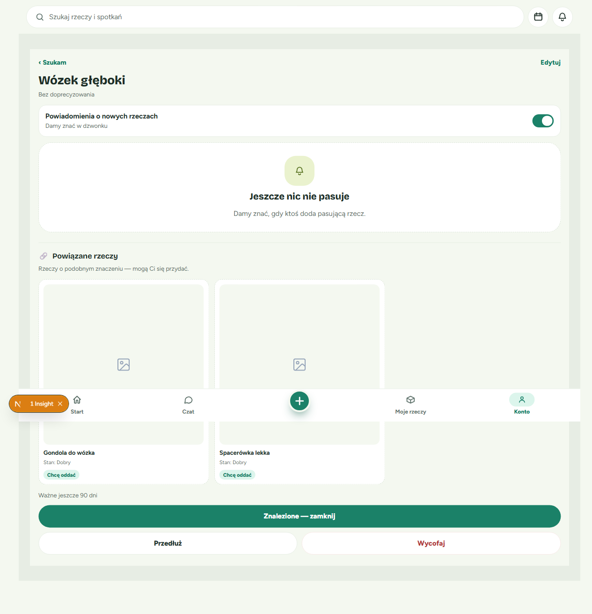
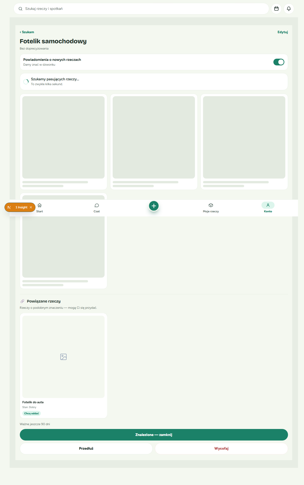
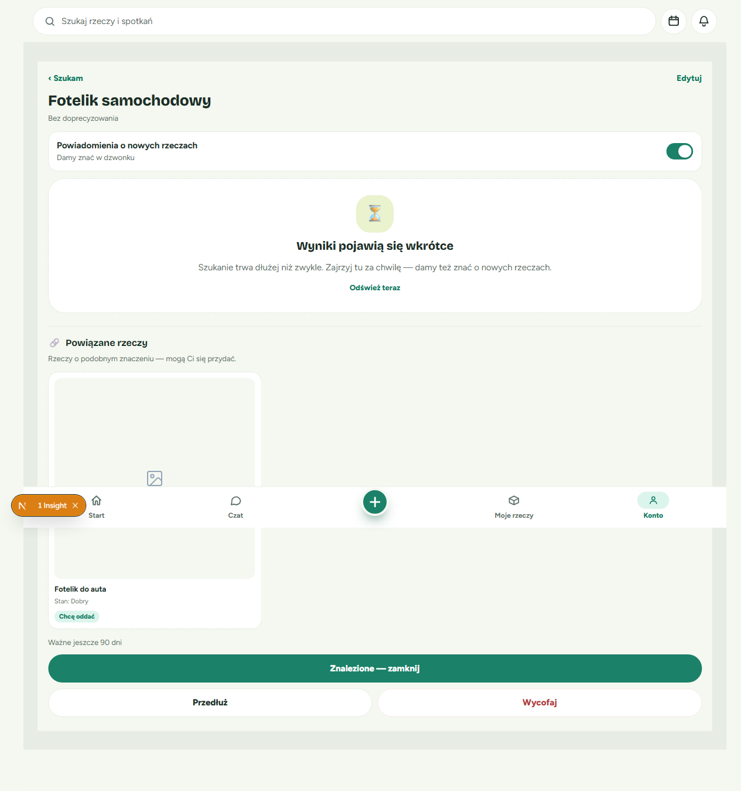

screen:want-detail-active-similar — ✓ Match
Same order: header → toggle → match grid → suggestions → „Powiązane rzeczy” → actions. Related cards in score order with thumb → name → „Stan” → mode pill. Data-only differences: emoji thumbs, the „Oddam” pill (live: „Chcę oddać”, existing ItemCard copy), the filter summary, „nowe” on a MATCH card, reserved pills not seeded.


screen:want-detail-empty-similar — ✓ Match
EmptyCard (🔔, „Jeszcze nic nie pasuje”, lead) → divider → related 2-column grid → actions. Same as the mockup.



screen:want-detail-matching-similar — ✓ Match
Status row with spinner → 4 skeletons → „Powiązane rzeczy” → actions. Live adds the existing „To zwykle kilka sekund.” line. matchingSlow (no mockup) keeps the section.




component:similar-section — ✓ Match
mt-5.5 border-t border-line pt-4, h2 with aria-hidden 🔗, lead copy, grid-cols-2 gap-3 sm:grid-cols-3 (2 columns at 390, 3 at 1280).

component:similar-card — ✓ Match
Dashed border-line-strong, no „brakuje:”, no „nowe”. Reserved captions/dimming not compared live (no reservations seeded).